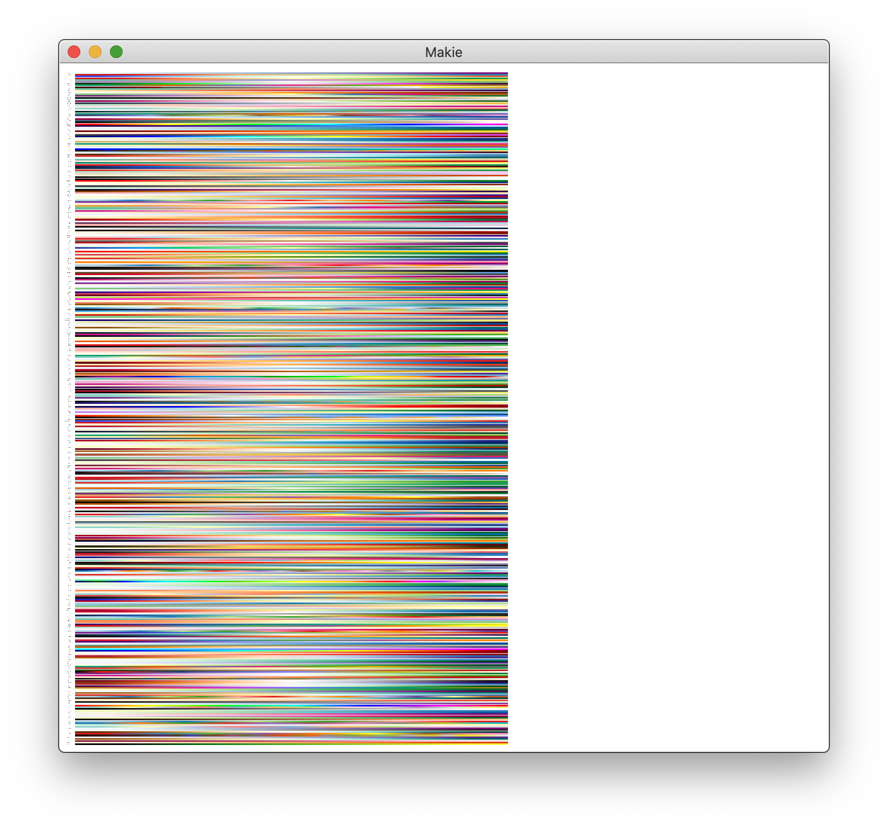

Plotting
UnicodePlots.jl
The heatmap() function in UnicodePlots.jl can use colorschemes. You have to supply the colors as an array of floating-point numbers first:
... colormap = [(x.r, x.g, x.b) for x in ColorSchemes.leonardo.colors]For example:
heatmap(z::AbstractMatrix; title = "Hot!",
colormap = [(x.r, x.g, x.b) for x in ColorSchemes.leonardo.colors])Plots.jl
Plots.jl supports all colorschemes from ColorSchemes.jl. They can be used as a gradient or as a palette and are passed as a symbol holding their name to cgrad or palette.
This renaissance-looking plot uses the leonardo scheme:
using Plots
x = 1:0.3:20
y = x
f(x, y) = begin
sin(x) + cos(y)
end
contour(x, y, f, fill=true, c = :leonardo)(You can use c as a short cut for seriescolor.)
With other plots, use the palette keyword:
using ColorSchemes
plot(Plots.fakedata(100, 20),
w=4,
background_color=ColorSchemes.vermeer[1],
palette=:vermeer)Gadfly
Here's how you can use ColorSchemes in Gadfly:
using Gadfly, ColorSchemes
x = repeat(collect(1:20), inner=[20]);
y = repeat(collect(1:20), outer=[20]);
plot(x=x, y=y,
color=x+y,
Geom.rectbin,
Scale.ContinuousColorScale(p -> get(ColorSchemes.sunset, p)))Makie
If you use Makie.jl you can pass the colors in a ColorScheme directly to the colormap keyword.
using Makie, ColorSchemes
N = 20
x = LinRange(-0.3, 1, N)
y = LinRange(-1, 0.5, N)
z = x .* y'
image(x, y, z, colormap = ColorSchemes.picasso.colors)You can display all the colorschemes using Makie by letting the code browse through the colorschemes dictionary:
using Makie, ColorSchemes
h = 0.0
offset = 0.1
scene = Scene()
cam2d!(scene)
plot = map(collect(keys(colorschemes))) do cmap
global h
c = to_colormap(colorschemes[cmap].colors)
cbar = image!(
scene,
range(0, stop = 10, length = length(c)),
range(0, stop = 1, length = length(c)),
reshape(c, (length(c), 1)),
show_axis = false
)[end]
text!(
scene,
string(cmap, ":"),
position = Point2f0(-0.1, 0.5 + h),
align = (:right, :center),
show_axis = false,
textsize = 0.4
)
translate!(cbar, 0, h, 0)
h -= (1 + offset)
end
scene
Winston
If you prefer Winston.jl for plotting, you can use ColorSchemes with imagesc:
using Winston, ColorSchemes
klimt = ColorSchemes.klimt.colors
Winston.colormap(klimt)
Winston.imagesc(reshape(1:10000,100,100))Sometimes you'll want a smoother gradient with more colors. You can use get(scheme, n) to generate a more detailed array of colors, varying n from 0 to 1 by 0.001:
brasstones = ColorSchemes.brass
brasstonesmooth = [get(brasstones, i) for i in 0:0.001:1]
Winston.colormap(brasstonesmooth)
Winston.imagesc(reshape(1:10000,100,100))PyPlot
ColorSchemes can be used with the cmap keyword in PyPlot:
# warning: this crashes your Julia session at the moment (2019-01-24)
using PyPlot, Distributions, ColorSchemes
solar = ColorSchemes.solar.colors
n = 100
x = range(-3, stop=3, length=n)
y = range(-3, stop=3, length=n)
xgrid = repeat(x', n, 1);
ygrid = repeat(y, 1, n);
z = zeros(n, n);
for i in 1:n
for j in 1:n
z[i, j] = 2sin(x[i]) * 2cos(y[j])
end
end
fig = PyPlot.figure("pyplot_surfaceplot",figsize=(10,10))
using3D()
ax = fig[:add_subplot](2, 1, 1, projection = "3d")
ax[:plot_surface](xgrid, ygrid, z, rstride=2,edgecolors="k",
cstride=2,
cmap=ColorMap(solar),
alpha=0.8,
linewidth=0.25)